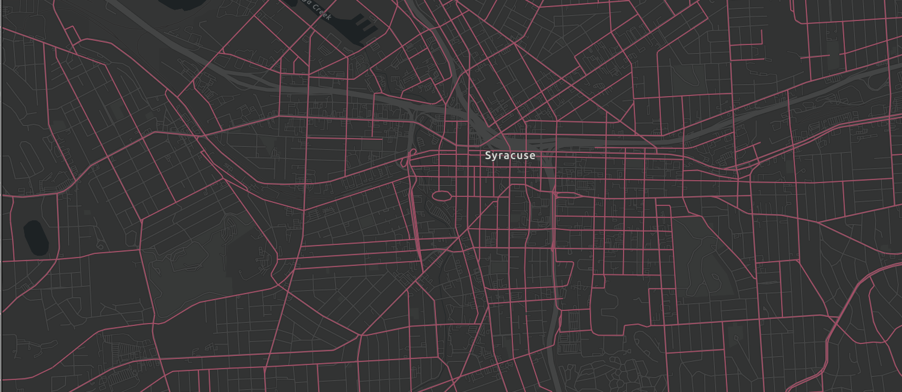
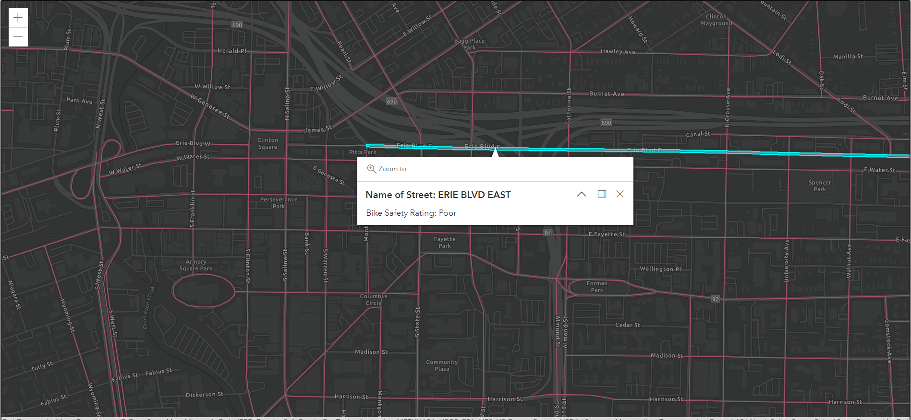

To get started, you'll need to create a new React app using Create React App. Open a terminal and run the following command:
npx create-react-app my-map-app
sign up for this free developer account at ArcGIS. This allows you to get an API key that we will need to do some of our mapping functionality. The link to sign up is: https://developers.arcgis.com/sign-up/
The next step is to add the ArcGIS API for JavaScript to the app. To do this, you can use the link provided by Esri:
In a React app, you can add this to the public/index.html file inside the head tag.
"script src="https://js.arcgis.com/4.26/"
Inside of the script tag, write the following:
require(["esri/config", "esri/Map", "esri/layers/FeatureLayer", "esri/views/MapView", "esri/widgets/Legend"],
function(esriConfig, Map, FeatureLayer, Legend) {
}
Then were are going to put in your API Key, inside of the above { } brackets like this
esriConfig.apiKey = {insert Your API KeyHere};
Then we will write some code to create a map and assign a basemap
const map = new Map({
basemap: "arcgis-dark-gray" // Basemap layer service
});
We are also going to create a mapView that allows us to insert the map into the HTML of the webpage.
const view = new MapView({
map: map,
center: [-76.154480, 43.088947], // Longitude, latitude
zoom: 13, // Zoom level
container: "viewDiv" // Div element
});
For that viewDiv container, create a style tag section in your index.html file, and add the following CSS code.
#viewDiv {
position: absolute;
top: 0;
bottom: 0;
left: 0;
right: 0;
}
Now when you save your files and type npm start in the terminal you should see a map similar to the one below
Find a dataset that you would like to display in your map. Then find the url for their feature layer server. Include that url in the code below.
const bikelayer = new FeatureLayer({
url: "https://services6.arcgis.com/bdPqSfflsdgFRVVM/arcgis/rest/services/BikeSuitability_v2/FeatureServer"
})
map.add(bikelayer);
const graphicsLayer = new GraphicsLayer();
map.add(graphicsLayer);
Now the map should like like this image below.
Now we will add some information to display on a pop-up. To do that we will create a template like this below. This will be added inside of the script tags of the index.html file, after the mapview that we made earlier.
const template = {}
title: "Name of Street: {NAME}",
content: "Bike Safety Rating: {Bike_Suitability_19}"
Depending on the dataset you are mapping you will need to find the field names that you wish to display in your pop up. In the Bike Suitability feature server, this information is listed under Fields, like the image below.
Fields:
- OBJECTID (type: esriFieldTypeOID, alias: OBJECTID, SQL Type: sqlTypeOther, length: 0, nullable: false, editable: false)
- NAME (type: esriFieldTypeString, alias: NAME, SQL Type: sqlTypeOther, length: 32, nullable: true, editable: true)
- Bike_Suitability_19 (type: esriFieldTypeString, alias: Bike Suitability, SQL Type: sqlTypeOther, length: 20, nullable: true, editable: true, Coded Values: [Excellent: Excellent], [Good: Good], [Fair: Fair], ... 1 more ...)
- Shape__Length (type: esriFieldTypeDouble, alias: Shape__Length, SQL Type: sqlTypeDouble, nullable: true, editable: false)
Inside of the bikeLayer object that we made earlier, we are going to add the popupTemplate code here:
const bikelayer = new FeatureLayer({
url: "https://services6.arcgis.com/bdPqSfflsdgFRVVM/arcgis/rest/services/BikeSuitability_v2/FeatureServer",
popupTemplate: template
})
When we click on a road segment now, the map should look like the image below.
Then maybe change colors based on a value. See if there is any other cool functionality, then ship this puppy.